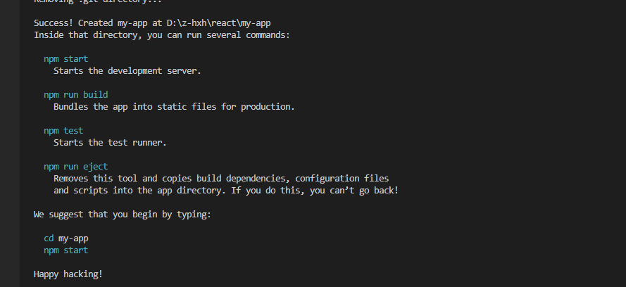

一、创建react项目
前提：已下载node和npm
node -v
npm -v
1、下载Create React App
npm install -g create-react-app
2、创建项目
npx create-react-app my-app
npx 是 npm 5.2+ 版本自带的一个工具，用于运行本地或远程的 npm 包。
执行成功后，会输出以下内容：
The directory my-app contains files that could conflict:
node_modules/
package-lock.json
package.json
public/
src/
Either try using a new directory name, or remove the files listed above.

3、执行项目的命令
cd my-app
npm start
二、知识点
-项目中的主要文件
my-app/
├── node_modules/ # 项目依赖库
├── public/ # 存放静态文件
│ ├── index.html # 项目的 HTML 模板文件，react会把所有的组件都渲染到 <div id="root"></div> 中
│ ├── favicon.ico # 浏览器图标
├── src/ # 存放源代码
│ ├── App.css # 样式文件
│ ├── App.js # 默认的根组件：编写自己的代码，构建UI
│ ├── index.css # 全局样式
│ ├── index.js # React 入口文件：通常在这里调用ReactDOM.render 将组件渲染到页面的根节点
├── package.json # 配置信息和依赖列表
└── .gitignore # Git 忽略文件